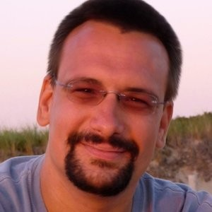

The R ecosystem, a cornerstone of statistical computing and data science, is poised for significant enhancements in its long-term health and security. With a new investment of USD $450,000 (€392,000) from the Sovereign Tech Fund (STF), the R Foundation is embarking on a crucial project to modernize R’s core infrastructure, improve its maintainability, and fortify its supply chain.
This initiative is championed by the R Foundation and the R Core Team. The R Foundation is a not-for-profit organization providing crucial financial and logistical support for the R project. Established by the members of the R Core Team, its primary mission is to ensure the continued success and stability of R for the global community. The Foundation, based in Vienna, Austria, holds the copyright for R software and uses its resources to support development and foster innovation in statistical computing. The R Core Team is the dedicated group of developers with write access to the R source code, who volunteer their time to guide the technical evolution of the language.

To understand the impact of this grant, we sat down with Simon Urbanek, a key member of the R Core Team and an Associate Professor in Statistics at the University of Auckland. Simon shared his insights on what this funding means for the future of R and how the community can play a part.
R Consortium: What core problem or opportunity does the commissioned work from the Sovereign Tech Fund help the R Foundation address?
Simon Urbanek: The main reason we are spearheading this effort is to increase the sustainability and maintainability of the R project. Sustainability, in the sense of making sure that the R codebase itself can be maintained long into the future, ensuring we have continuity and making that process easier.
This investment also helps us address increasing concerns around software supply chain security. This has to do with provenance and reliability—ensuring that users can be assured that a particular piece of software comes from the right source. This involves initiatives like signing sources and binaries to verify their origin.
Finally, a key component is reproducibility. We want to ensure that analyses and results can be reproduced reliably, both by the original authors and by others in the community.
R Consortium: You mentioned provenance and the need for verification. Is this being driven by new regulations?
Simon Urbanek: Not directly by regulation, no. This is more of a proactive measure. Given the age of the R project, our distribution model has traditionally been a central repository where people can simply download files. While this has served us well, the open-source world has seen various security issues, making it clear that we need better ways to verify that software comes from a trusted source.
We already have binary signing for R itself on macOS and Windows, but this hasn’t been extended to packages. It’s an important step to take. While it’s not clear if platforms like Microsoft will officially require it, there are indications they may. We want to prepare for that possibility and strengthen the security of the ecosystem, especially for a central distribution hub like CRAN.
R Consortium: Why is tackling this problem now timely for the R ecosystem and the wider open-source community?
Simon Urbanek: R has been around for over 25 years and has become part of the fabric of data analytics and statistical analysis in government, academia, and commercial entities. With this level of adoption, it’s critical that we can sustain the maintenance of R to support its community. The purely volunteer-driven effort that got us here may not be sufficient to address the increasing complexities and threats we see today.
R Consortium: What tangible deliverables can the community expect, and on what timeline?
Simon Urbanek: The main improvements will be within R itself, and some may be under the hood. Deliverables include replacing legacy code and older third-party projects that were integrated into R for historical reasons. This will make R more maintainable, as we won’t have to oversee unmaintained code.
We are also focused on making it easier to port R to new platforms, such as the Windows ARM platform. Other improvements will be more visible to developers, including enhanced documentation and better tooling, with the goal of making it easier for new people to contribute to R.
The work is expected to take place over the next 18 months. We hope that the foundations we lay during this project will carry over and continue to be useful long after the project officially concludes.
R Consortium: Who are the key people and teams involved in this initiative?
Simon Urbanek: A significant portion of the technical work—including bug triage, platform improvements, and replacing old infrastructure—will be done by Tomas Kalibera. As a member of the R Core Team, Tomas is one of the most active developers of the R interpreter, and his deep expertise in R’s internals and build systems makes him uniquely suited to lead the modernization of R’s core. This grant provides vital support for him to dedicate his time to these foundational improvements that are critical for R’s long-term health.
Other efforts, especially around documentation and community engagement, will be led by various R Core members. This entire project was conceived with the help of the R Foundation board members, and we also hope to collaborate with the R Consortium to bring in more contributors from the community.
R Consortium: What makes the Sovereign Tech Fund a uniquely suitable partner for this initiative?
Simon Urbanek: The Sovereign Tech Fund is a really good match because its mission is perfectly aligned with our needs. Their main focus is on sustainability for open-source software and strengthening digital public infrastructure, which is exactly our primary concern at the moment. We want to ensure R’s development is sustainable and that the community itself can support it without having to rely on commercial partners.
This investment allows us to modernize the codebase to make it easier to maintain and, at the same time, build resources to encourage more community contributions.
R Consortium: How can the R community get involved and contribute to this effort?
Simon Urbanek: There are many ways for the community to get involved. People can definitely provide feedback, especially as we add new user-facing features and create new documentation. We need to know if these resources are truly making it easier for the community to contribute.
Another area is bug triage. We aim to reduce the number of pending bugs, especially older ones, to make the bug tracker less overwhelming. The community can help identify and work on important issues.
Finally, we will need help with testing. This is true for improvements in R itself and for new infrastructure related to packages, such as containerized checks for reproducibility and the adoption of code signing. The community’s participation in testing, providing feedback, and adopting these new practices will be invaluable.
R Foundation resources
Main site: https://www.r-project.org/foundation/
How you can contribute: https://contributor.r-project.org/
The useR! 2025 conference was held at Duke University, in Durham, NC, USA, on August 8-10. Next year’s event will be in Warsaw, Poland.